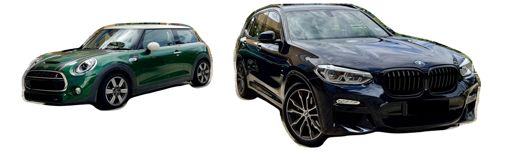

Premium Cars. Priced to Sell.
🚗💨 Two Premium Cars for Sale in Brunei — Grab Them Before They’re Gone!

Looking for a ride that turns heads and delivers performance? You’re in the right place. I’m selling two meticulously maintained, low-mileage, high-spec cars — a BMW X3 (G01) M Sport and a Mini Cooper S 60 Years Edition.
Each car has full OEM service history at QAF Auto Sdn Bhd, lovingly cared for, and barely used for their age. ✨
🔥 BMW X3 (G01) 2019 xDrive30i M Sport — CUSTOM BUILD, UNIQUE IN BRUNEI!
💰 Asking Price: BND 58,000 ono
🛠 Original Price: BND 140,000
📍 Mileage: 62,000+ km
🎨 Colour: Carbon Black
🪑 Interior: Leather Merino Tartufo + Sensatec dash
🚀 Performance: 2.0L B48 turbo petrol (348hp/350Nm) | 0–100 km/h in 6.4s
🛞 Wheels: 20” double-spoke 699 M runflats + M Sport Brakes
🏁 Key Features:
- ✅ M Sports Package + M Aerodynamics Kit
- ✅ Adaptive LED Headlights
- ✅ Adaptive Suspension
- ✅ Heads-Up Display
- ✅ Apple CarPlay + Parking Assistant Plus
- ✅ Panoramic Glass Roof + Rear Door Roller Sun Visors
- ✅ M Leather Steering Wheel + Sports Seats
🧰 Extras Included:
- OEM black kidney grille 💀
- OEM acoustic glass (driver + passenger)
- OEM All-Weather Floor Mats + Cargo Mat
- OEM Floating Center Caps ✨
- 3M Crystalline Series 90 tint (incl. sunroof) 😎
- 70mai front & rear dashcam
- 🔧 Full service history at BMW QAF
🏆 This is a custom configuration not available in Brunei — a rare gem. Perfect blend of sportiness, luxury, and practicality. A head-turner in every way.
🍀 Mini Cooper S (F56) 2019 Hatchback — 60 YEARS SPECIAL EDITION!
💰 Asking Price: BND 35,000 ono
🛠 Original Price: BND 65,000
📍 Mileage: 46,000+ km
🎨 Colour: British Racing Green IV
🪑 Interior: 60 Years Dark Maroon Leather
🚀 Performance: 2.0L B48C petrol (189hp) | 0–100 km/h in 8.2s
🛞 Wheels: 17” 60 Years spoke 2-tone runflats
🎉 Edition-Specific Features:
- ✅ 60 Years Insignia Package (lights, stripes, scuttles)
- ✅ LED Headlights, Fog Lights, Rear Fog
- ✅ Park Distance Control (rear) + Backup Camera
- ✅ Apple CarPlay + Sports Seats
- ✅ Lounge-style leather interior exclusive to the edition
- ✅ Full service history at BMW QAF
🎂 Built to celebrate 60 years of MINI heritage — this is not your ordinary hatch. Perfect for the style-conscious urban driver who appreciates punchy performance and standout design.
📞 Interested?
Reach out now before someone else grabs them!
Contact Haziq [WhatsApp: 7171144].
These aren’t just cars — they’re experiences on wheels. 💫